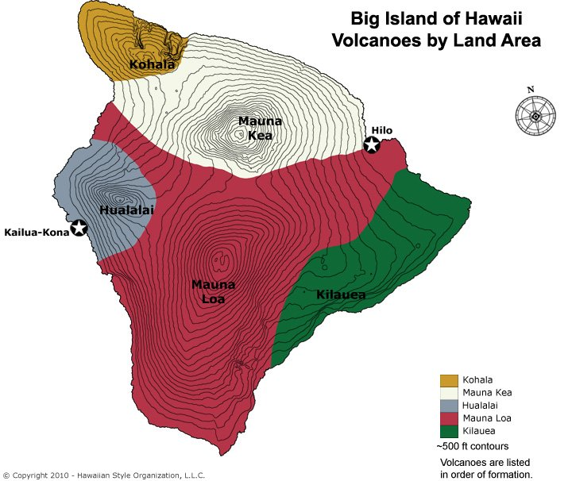
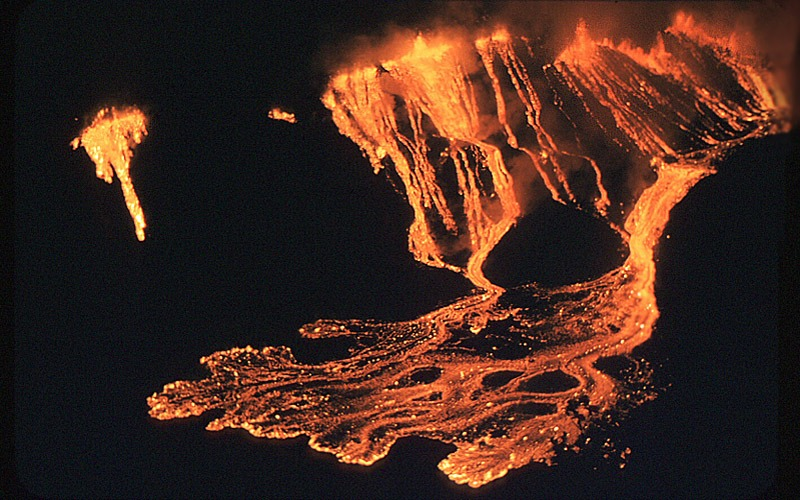

Hawai'i Volcanoes National Park FAQ
- 1. How many volcanoes are there on the Big Island?
- Five volcanoes make up the Big Island of Hawai'i: Kohala, Mauna Kea, Hualalai, Mauna Loa, and Kilauea.
- 2. Which ones are extinct, dormant, or active?
- Kohala, the oldest volcano on this island, last erupted about 60,000 years ago and is considered extinct.
Mauna Kea last erupted 3,600 years ago and is dormant.
Hualalai, Mauna Loa, and Kilauea are active. Kilauea has been erupting continiously since 1983.

- 3. How much lava does Kilauea erupt on a daily basis?
- The current eruption rate is 250,000-650,000 cubic yards per day. That is enough to resurface a 20-mile-long two-lane road every day.

- 4. Where does all of that lava go?
- Most of the lava is transported by lava tubes to the ocean, where it fragments, and adds layers of rubble to the submarine flank of the volcano. Some does break the surface, where it can be destructive, depending on which way it flows.
- 5. How many homes/buildings have been destroyed in the current eruption?
- To date, 181 homes, the Wahaula visitors center, the Royal Gardens Community Center, the Mauna Kea Congregational Church, and the Kalapana Drive-in have been destroyed.
Click to toggle the answers.
Mount Rainier National Park
- The park was established on March 2, 1899.
- It encompasses 369.35 square miles within its legislative boundaries.
- One-to-two million people visit Mount Rainier each year.
- The volcano is considered "episodically active," meaning that it will erupt again sometime in the future, despite being quiet now.
Yellowstone National Park
- The park was established on March 2, 1872.
- It encompasses 3,472 square miles within its legislative boundaries.
- Four million people visit Mount Rainier each year.
- The volcano is considered active, with major eruptions about every 70,000 years.
Mount St. Helens
- Part of the Gifford Pinchot National Forest.
- On the morning of May 18, 1980, after weeks of small tremors, a magnitude 5.1 earthquake shook beneath Mount St. Helens and triggered an enormous eruption.
- The eruption involved a complex series of events that unfolded over the next 12 hours, with many events going on simultaneously.
- These volcanic events buried some areas in debris avalanches and mudflows, scoured other areas with hot gases, blew down or scorched forests on slopes several miles away, and dusted forests farther away with volcanic ash.